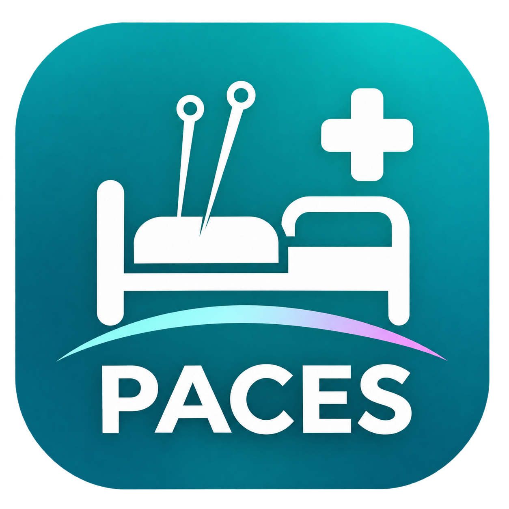

Skip to content

PACES
WARD PILOT
Post-Acupuncture Care Exchange & Sharing
Oncology Ward Pilot
|
For Nurses and CMPs
Connecting care. Sharing knowledge.
Search the wiki
/
Search
PACES KNOWLEDGE HUB
×
Done